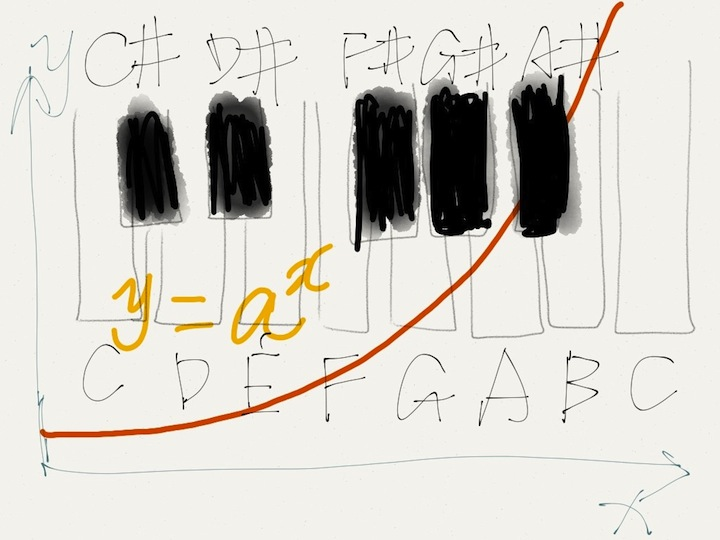

iPad上的画图软件: paper
我一直对有些blog上的涂鸦很感兴趣. 很多blog如xkcd中的图都是画在纸上然后扫描进电脑里的, 这个对于我来说又显得太麻烦了, 而且画画从来对我就是一件难事, 如何选颜色, 风格都是很难的问题.
其实我对涂鸦的要求很低, 只要能够起到说明问题, 让人一目了然就可以. 昨天发现了这个app: paper by fiftythree
这个app我想了下, 吸引我的原因主要是:
1. 选择少, 有几种画笔但是画笔不能选择粗细, 颜色只有固定的几种.
2. 这些选择的效果都不错. 不同画笔风格互相弥补, 仅有的几种颜色搭配很协调.
看来对我这样的业余用户来说, 在简洁性和功能性上选择前者更具有吸引力.
